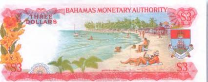
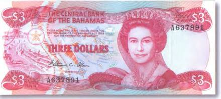
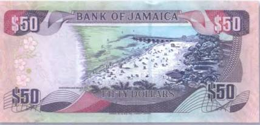
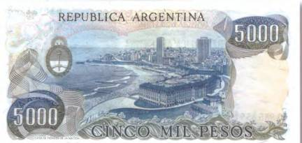
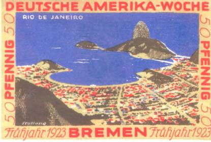

Тайны бумажных денег : Земной рай

Пляжи Карибского моря и Мексиканского залива не напрасно ассоциируются у миллионов туристов со всего мира с настоящим раем на земле. Почти круглый год там царит теплый и мягкий морской климат, который одинаково хорошо влияет как на душу, так и на тело человека. Тихий шелест прибоя в сочетании с романтичными закатами и восходами «вынуждает» людей раз за разом возвращаться в сказочный мир под пальмами. Не в малой степени этому способствуют и яркие экзотические виды на банкнотах стран Карибского бассейна. К примеру, на боне Багамских островов в 3 доллара 1968 г. запечатлен прекрасный вид тропического пляжа (рис. 166).
Кажется, протяни руку и она коснется мелкого, нагретого солнцем кораллового песка, а в лицо дыхнет солоноватый морской ветерок… Кстати, и название у увековеченного на боне пляжа соответствующее — Парадиз (Paradise beach). В переводе с английского это слово означает «рай». Он находится на острове Парадиз-Айленд (Багамский архипелаг) и считается одним из лучших на Багамах. Пляж, конкурирующий с ним по красоте и посещаемости туристами, расположен в непосредственной близости. Это Коув-Бич (Cove beach).

Оригинальность таких купюр заключается не только в реалистичности отображенных деталей, но и в особой роли, которую они играют. Ведь подобные банкнотные изображения — самые настоящие свидетели истории. Этакие слепки времени. Они словно старинные фотографии, которые уже никогда не потеряют своего ностальгического шарма. Если внимательно присмотреться к отдыхающим на берегу людям, изображенным на боне, то можно без труда заметить как, к примеру, поменялась с 1968 г. пляжная мода. На тех же самых багамских 3 долларах 1983 г. бикини женщин стали еще более изысканными. В то время как мужчины начали отдавать предпочтение шортам-бермудам (рис. 167).

Изменилось и все вокруг. На Багамских островах с конца 1960-х гг. было построено много великолепных отелей, отвечающих самым изысканным вкусам «истосковавшихся» по отдыху людей. Так, совсем недавно (2007) на пересечении описанных выше багамских пляжей возвели новый отель категории люкс «Cove Atlantis». По словам владельцев, он предназначен для путешественников, «которые хотели бы расслабиться, насладиться красивой природой и купанием в прозрачных волнах Атлантического океана, а также хотя бы ненадолго замедлить ритм жизни». Правда, цены там не каждому по карману.
Пляжи южных морей можно встретить и на бумажных деньгах других стран Америки. К примеру, на банкноте Ямайки номиналом в 50 долларов 2005 г. виден фрагмент пляжа «Doctor's Cave beach» (рис. 168).
А на аргентинской боне в 5000 песо 1983 г. запечатлен кусочек знаменитой курортной зоны города Мар-дель-Плата. Это один из старейших курортов Аргентины. С начала XX в. Мар-дель-Плата облюбовали знатные аргентинские семьи, искавшие альтернативу далеким европейским курортам. Со временем там, на берегу Атлантического океана, появились роскошные виллы и резиденции в неповторимом эклектичном стиле.

Городская набережная вытянулась на 20 км. Всего же протяженность побережья Мар-дель-Плата составляет 47 км. Большой популярностью у местного населения и многочисленных гостей Аргентины пользуются пляжи Перла-Норте и Ла-Перла. По-своему специфичны пляжи Пасео-Эрмитаж, Пунта-Иглесия, Баия-Плайя-Бристоль, где есть и тихие бухты, и живописные скалы. Отдельные из них пользуются большой популярностью у любителей морской рыбалки. А вот на представленной здесь банкноте художник увековечил часть курортной зоны Пунта-Кантера-Фаро, которая отличается преимущественно современными зданиями и панорамными видами (рис. 169).

Еще один тропический пляж нарисован на немецком инфляционном нотгельде [25], выпущенном в г. Бремен весной 1923 г. (рис. 170). Это бона в 50 пфеннигов из так называемой серии «Немецко-американская неделя», состоявшей из четырех номиналов — 25, 50, 75 и 100 пфеннигов. На рисунке показана бухта Гуанабара и популярный в середине XX в. городской пляж Ботафогу (Botafogo). Кроме того, открывается вид на другую достопримечательность второго по величине города Бразилии — вершину Сахарная голова (Пан-ди-Асукар). Эта изолированная гора у самого входа в бухту поднимается на 395 м. Представленная здесь бона по-своему уникальна. Дело в том, что это первый и пока, пожалуй, единственный денежный знак, на котором запечатлен пик Пан-ди-Асукар. И что самое интересное — он вовсе не бразильский…
Сегодня одним из популярнейших пляжей Рио-де-Жанейро считается Копакабана (так называется и район на юге города). По его набережной проходит не менее известная Атлантическая авеню. Однако Копакабана пользуется сегодня дурной славой. Все дело в том, что местные жители и туристы нередко подвергаются там ограблению и даже вооруженному нападению. А вообще за последнее десятилетие число этих криминальных деликтов на улицах Рио-де-Жанейро выросло на 90 %!

Отдыхающие на пляжах южных морей иногда становятся случайными свидетелями загадочных событий, которые потом волей-неволей запоминаются на всю оставшуюся жизнь. Действительно странный случай произошел однажды на Бермудах. Сразу несколько сотен человек, находившихся на пляже, наблюдали, как в прибрежные воды упал самолет. Однако в том месте позже не было обнаружено абсолютно никаких следов катастрофы. Подводники тщательно обследовали дно, но обломков самолета нигде не оказалось.
По сообщениям местных жителей, у побережья чилийского острова Chiloe периодически появляется Летучий голландец. А вот у побережья Северной Америки (у острова Block Island) не раз видели призрак горящего парусника. По легенде, в 1752 году этот корабль был ограблен и сожжен разбойниками. С тех пор его пылающие паруса и мачты не раз видели к западу от Лонг-Айленда (Long Island). В последний раз это будто бы случилось в 1969 г.
Возможно, что в подобных случаях имеют место так называемые сдвиги во времени, то есть отдельные события из прошлого каким-то немыслимым образом вновь дают о себе знать уже в наше время.